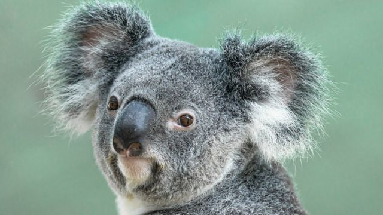

Welcome to the Koala Bear National Information Center! In this site you can learn about Koala bears, adopt a Koala, give to our foundation, sign up for our newsletter, or schedule a visit. Please take some time to explore the information provided in this site!
The Koala Bear National Information Center (KBNIC) is the principal non-profit, non-government organization dedicated to the conservation and effective management of the wild koala and its habitat.
The KBNIC was formed in 2006. Since our founding the KBNIC has grown from a small group of people interested in researching koala disease, to a well-known, global organization with a strong track record in strategic koala research, conservation and community education with a huge focus on mapping -- our absolute strength.
Koalas are disappearing. Loss of koala habitat and koala food trees (eucalyptus leaves) is the leading koala threat. Our cuddly koalas are loved around the world. Often called a koala bear, they are actually marsupials not koala bears. Please help koalas by supporting the Australian Koala Foundation.